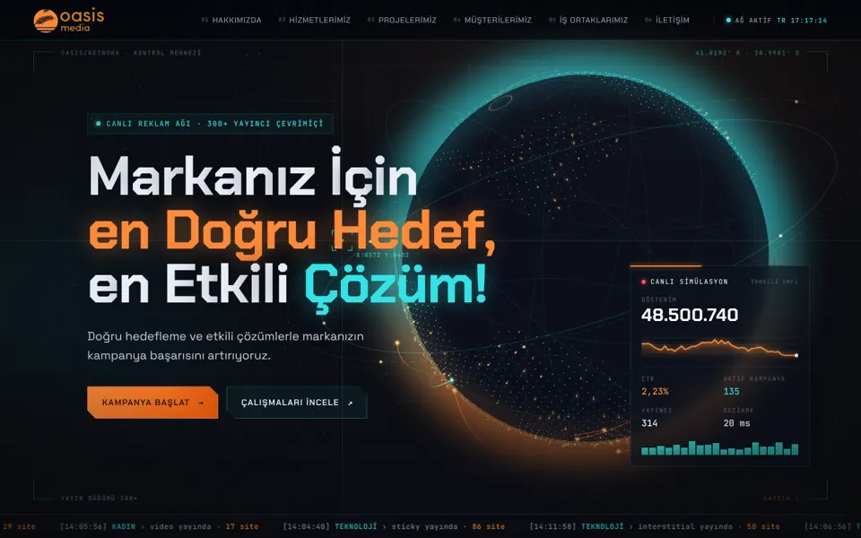
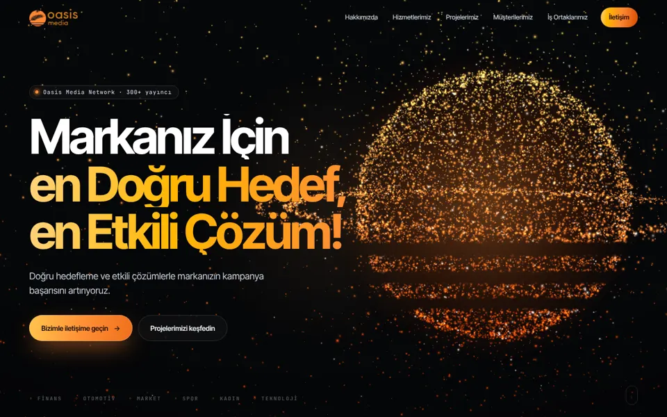
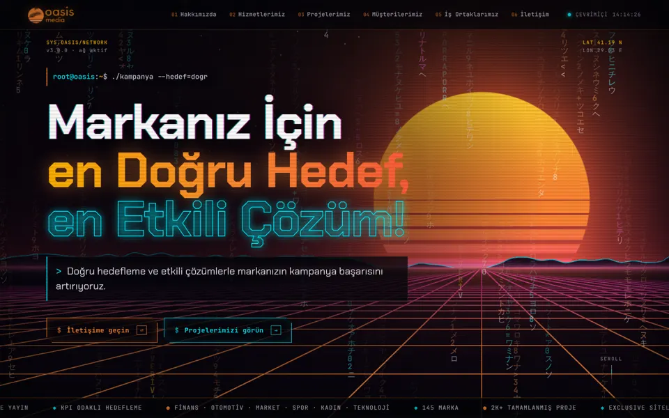

Üç farklı teknolojik yön. Aynı içerik, logolar ve PDF sunumu; farklı kurgu ve efektler. Bir karta tıklayıp siteyi açın.

Canlı reklam kontrol odası: dönen 3D dünya ve 300+ yayıncı arasında uçan ışık hatları, canlı simülasyon paneli, radar, kadranlar, tarama ışığıyla yanan logo duvarı.
Siteyi aç →
Ürün lansmanı gibi sinematik: binlerce parçacıktan çizgili güneş, kaydırdıkça 300+ / 2K+ / 10 / 145 rakamlarına dönüşür; 3D vitrin, eğik logo şeritleri, dönen partner halkaları.
Siteyi aç →
Terminal açılışı, kod yağmuru, neon ızgara ufkunda batan güneş, glitch başlıklar, yedi segment rakamlar, şifresi çözülerek beliren logolar, neon partner ağı.
Siteyi aç →